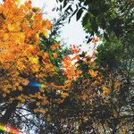

meaningless off-screen death
Digital AlbumStreaming + Download
Includes unlimited streaming via the free Bandcamp app, plus high-quality download in MP3, FLAC, and more.
Download available in 16-bit/44.1kHz.
Buy Digital Album $1 USD or moreSend as gift
-
1.
bliss
02:30
buy track
lyrics
-
it wasn't hard at the start of all of this to imagine that things would change but now that i'm here, i'm not worried anymore it all just washes over me i am filled with bliss and selflessness, all coalescing into a lovely and unsuspecting mist it's never been this clear to me, ah
-
2.
threshold of form
01:31
buy track
lyrics
-
how much how loud how hard do you think do you think i'm real yet? how much do i need to bare my soul to you? how loud do i need to scream my songs for you? how hard do i have to let you fuck me? just to think that i'm real
-
3.
CH3(CH2)11(OCH2CH2)nOSO3Na
01:57
buy track
lyrics
-
i wash my hands it won't come off wash my hands it won't come off it's hard to wake up on days like this with a bullet to bite and my head on backwards i wash my hands but it wont come off my skin is hanging on to my bones why can't you just tell me your intentions it's hard enough as it is the ridges of your soul collapsing inward i wash my hands but it wont come off my skin is hanging on to my bones
-
4.
yet another one of my harebrained schemes has backfired on me
00:59
buy track
lyrics
-
are you here at all? will you stick around and watch it fall on you? did you think you could just use me like a tool of yours? well maybe you're right and maybe i am just another fucking tool of yours and maybe you're right, but maybe i am just another human too, you know
-
5.
shut your eyes and it will go away soon
00:59
buy track
lyrics
-
is there anything worse than this? i don't think so if i could go back in time i would if there's any hope for me left here, i'll find it if there's any reason left for me to be you've been treading water all the while you'll miss everything with your eyes glued shut!
-
6.
the grinning smiler
02:47
buy track
lyrics
-
for the life of me it's your face i really need to see i won't forget that look you gave was straight up mean i am getting overwhelmed, i turn away it's hard to tell i hide behind the jackets you bought winter last year i'm piercing your floorboards and slinking away you don't have any clue just how much i love your face can't i just keep staring don't make me leave oh no it's so cruel, oh well i really can't complain despite having so many regrets i'm so god damn happy i'm grinning as i watch from afar smile so big i don't care if i get noticed i will listen to your breathing feel it on my own skin ah, it's not fair, it's not fair, but i can't stop smiling it just hurts what i want? it's hard to say but you'll see soon what i have in store ah, my heart's racing after all these years come here, you this is what i have been waiting for since you first moved in three years ago but if i'm being honest, i kinda thought this would never really happen but wow, look, here we are hey come back here why are you running from me oh my god, this is so much fun i just sank my teeth into your neck ah! grinning as i bite down hard i smile so big i don't care if i get noticed i will listen to your choking your blood on my own skin ah, i'm so glad i'm so relieved my dreams came true and i could just die you lie on the floor in this flowing gentle scarlet mirror ah ah ah
-
7.
counting how many faces we can each find in the texture of the popcorn ceiling
02:05
buy track
lyrics
-
shotguns and wedding rings two things i've never seen as we lie here your skin lullabies me your electric hum my radiosity enough is enough you slam me up against the wall of your room
-
8.
just words
01:22
buy track
lyrics
-
i don't believe a word you say to me my friends, they seem so far away in the end it's just words in the end we're all just dust just dust your friend i'll be, oh
-
9.
a desaturated photo of some weird looking rocks over choppy waters
01:01
buy track
lyrics
-
that rock formation, a scattered memory i can't believe that this light ever touched me after diffusing and bouncing around the lens what's left and what is to come still curious questions assuming the worst and stacking expectations higher, and higher, yeah! waiting for them all to come crashing down i know you've been holding it all in since you were just a kid but you don't have to worry about me
-
10.
(en)raptured
02:21
buy track
lyrics
-
measured footsteps escaping from where i slept as you make your exit, floating angel on the carpet we won't ever be like this again but it will live in the background toxic radiation your awkward glances, half committed gestures as if you can't decide which emotion to confide in we won't ever be like that again but there are things that are more real we will be just fine
- 11. wandering 03:01 buy track
-
12.
while i'm still here
02:26
buy track
lyrics
-
painful memories of people who have long forgotten me i've said some awful things regret you know it stings but you say that i'm so sweet, oh i'm finding this so hard to believe 'cause it's really so easy so let's stay together while i'm still here i don't want your pity, forgiveness, or your anything 'cause really i'm not so innocent i'm really not so innocent but you say that i'm so sweet and i'm finding this so hard to believe cause it's really so easy so let's stay together while i'm still here
-
13.
meaningless off-screen death
02:55
buy track
lyrics
-
why are you always trying to find a reason why you're wrong? don't you know that i know that i'd say something? i don't understand why everything happens for a reason in your mind sometimes things can happen off-screen
- 14. outro 03:20 buy track
a sentimental blend of pop, breakcore, and noise rock
recorded from june 2023 – february 2024
available on streaming services, slsk whenever my pc is on, and bandcamp. thank you so much to everyone who has supported this album by listening sharing and being gracious enough to buy it :)
as always, all my self-published music is released under a cc by-sa license, so feel free to share, remix, or otherwise use this music for any purpose your heart can dream of
extra special thanks to everyone in my life who made this album possible through your friendship and enthusiasm and support: you all mean the world to me <3
released March 1, 2024
composition, arrangement, recording, engineering, and mastering by ivy (that's me :D)
Some rights reservedTags
 Share / Embed
Wishlist
Share / Embed
Wishlist
supported by
-
end draconis here's an album review! this album is great. i have listened to it so much it's very good. wow. what a review.
ivy sinthetic
Seattle, Washington
♡♡♡
ivy.dog
Discography
-
meaningless off-screen death
Mar 2024
- for the longest time, i... Mar 2023
-

in hushed tones (extended version) Feb 2023
contact / help